虚拟机
JDK、JRE、JVM¶
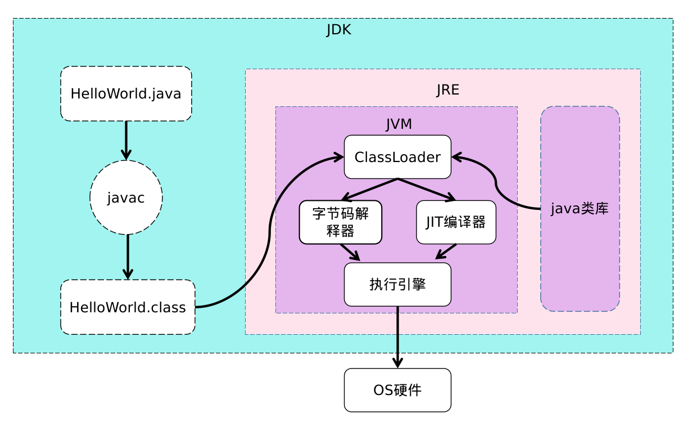
jdk包含jre和jvm
jdk提供工具：java、javac、javap等工具
jre包含java类库和jvm
jvm是一种规范，Classloader用来加载class，然后使用解析器翻译代码
jvm是用c++语言编写
解释执行：用c++解释器去解析class中的代码，所以经过翻译速度会慢一点
JIT执行：class代码翻译成汇编码(codecache)，速度相对比较快
jvm只接收字节码(class)和开发语言无关性(kotlin,groovy等最终转成字节码即可)，跨平台(不同操作系统有对应JDK)
只要符合jvm规范可以自行开发jvm
Jvm的内存区域¶
执行java程序时会把内存分为五个区域：虚拟机栈、本地方法栈、方法区、堆、程序计数器
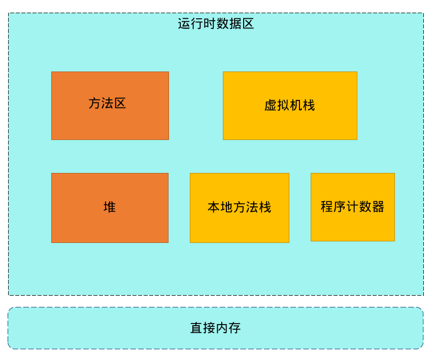
运行时数据区根据线程划分：线程共享区和线程私有区
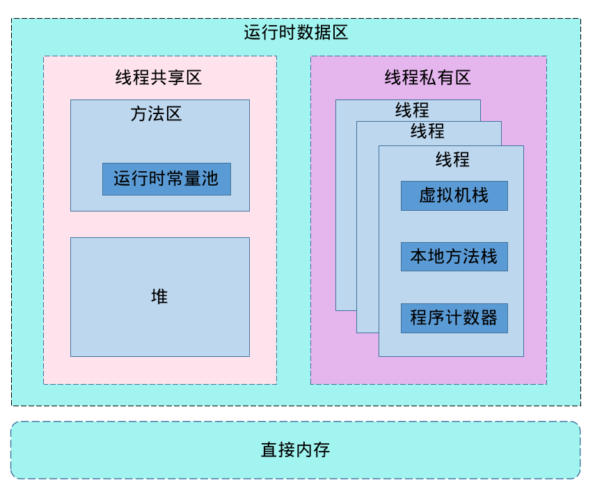
线程共享区(被所有线程共享，有且只有一份)：方法区和堆
线程私有区：多个线程
除了运行时数据区还有直接内存(没有被虚拟化的内存，比如系统内存8G，jvm虚拟化了5G，剩余3G被称为直接内存)
方法区：运行时常量
线程：虚拟机栈、本地方法栈和程序计数器
虚拟机栈¶
1.大小取决于平台，查询链接
https://docs.oracle.com/javase/8/docs/technotes/tools/unix/java.html
-Xsssize
64位系统都是1M
即每个线程至少1M大小，可通过以下方式减小大小优化系统内存紧张
-Xss1m
-Xss1024k
-Xss1048576
2.用来存放当前线程运行方法所有的数据、指令、返回地址，由于是栈结构，所以先进后出，调用时入栈，完成时出栈
比如方法main调用A，即A在main上面，每个方法会产生一个栈帧
栈溢出：调用方法数量总大小超过1M导致抛出的异常，常见死递归
栈帧：局部变量表，操作数栈，动态连接，完成出口
局部变量表：存放局部变量(java的八大基本数据类型、对象引用、returnAddress类型)
操作数栈：存放方法执行的操作数，操作的元素可以是任意java数据类型，会复用
动态连接：java语言特性多态相关
完成出口(返回地址)：调用程序计数器的地址作为返回
- 正常返回：恢复上层方法的局部变量表和操作数栈；把返回值(如果有)压入调用着栈帧的操作数栈中；调整程序计数器的值指向方法调用指令后的一条指令
- 异常返回：由异常处理表<非栈帧中的>来确定
程序计数器¶
指向当前线程正在执行的字节码行号(指令地址)，占用很少内存，唯一不会造成OOM的内存区域
运行流程
public class JvmTest {
public int work() {
int x = 3;
int y = 6;
int z = (x + y) * 14;
return z;
}
public static void main(String[] args) {
JvmTest test = new JvmTest();
test.work();
}
}
重点总结：
- 执行main方法时会执行main线程
- 主要展示虚拟机栈和程序计数器
- iconst_3：3对应的是数值3
- istore_1：1对应的是偏移值
- iload_1：1对应的是偏移值
- bipush: int值超过5以后使用，会占用更大空间，所有偏移量占用了2个(图中没有3和9的原因)
- 程序计数器和栈帧并不是一一对应，只有一个，程序计数器对每个栈帧计数时都是从0开始，但虚拟机栈只会执行顶部栈帧，所以程序计数器不会重复混乱现象
- 每次使用数据都需要经过操作数栈，存入变量表、计算操作、返回数据等
- 如果是static方法则没有this(0位置)
具体演示流程如动图

更多指令可通过以下网站查看说明
https://cloud.tencent.com/developer/article/1333540
本地方法¶
java中无法直接操作线程，通过本地方法栈(native方法)，结构类似于虚拟机栈，但程序计数器无法记录
堆¶
存放所有new出来的东⻄，是GC管理的主要区域
堆内存分三代，新⽣代，⽼年代，持久代
⽅法区¶
被虚拟机加载的类信息、常量、静态变量等
直接内存¶
NIO中的DirectByteBuffer，会自己释放
unsafe类
直接申请内存相关，需要手动管理，跳过JVM的垃圾回收(不会自动释放)
ByteBuffer.allocateDirect()方式申请内存会自动释放
深入理解JVM内存¶
无非就是虚拟化
jps查看进程号，jinfo -flags 进程号查看信息
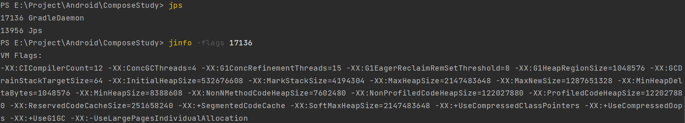
public class JavaTest {
public final static String TYPE = "type";
public static String TAG = "tag";
public static void main(String[] args) throws Exception {
Fruit fruit1 = new Fruit();
fruit1.setName(TYPE + "-apple");
fruit1.setPrice(15.3);
Thread.sleep(Integer.MAX_VALUE);
for (int i = 0; i < 1; i++) {
System.gc();//15次后进入老年代
}
Fruit fruit2 = new Fruit();
fruit2.setName(TAG + "-watermelon");
fruit2.setPrice(28.5);
Thread.sleep(Integer.MAX_VALUE);
}
}
class Fruit {
String name;
double price;
public void setName(String name) {
this.name = name;
}
public void setPrice(double price) {
this.price = price;
}
}
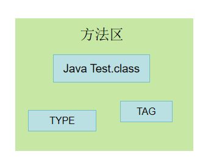
- 执行方法
- 创建对象
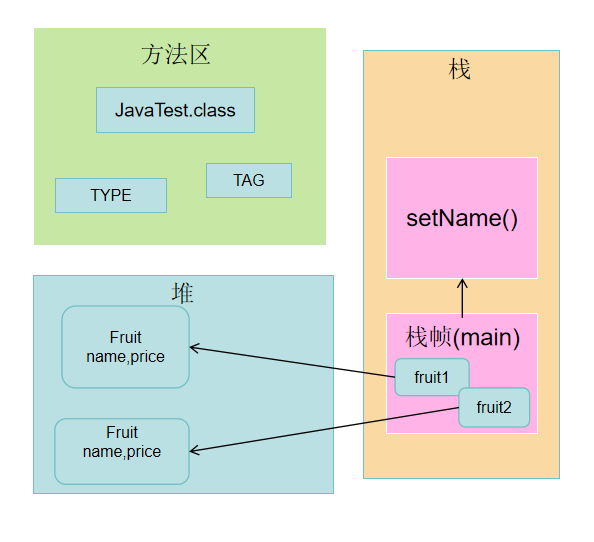
- 不断执行方法
JHSDB¶
查看内存工具
步骤
- 运行程序
- 获取进程号：jps
22176 JavaTest
- 启动内存工具
旧版本：
java -cp .\sa-jdi.jar sun.jvm.hostspot.HSDB
jhsdb hsdb
bin\jlink.exe --module-path jmods --add-modules java.desktop --output jre
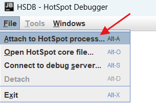 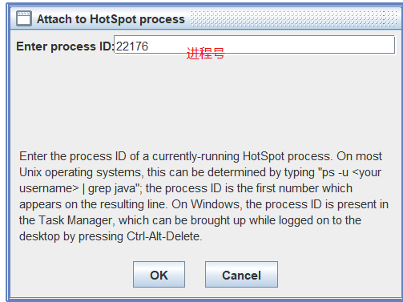
查看堆情况¶
Tools-Heap Parameters
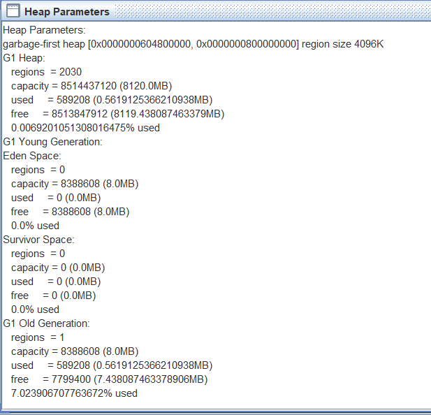
分配地址起始值和结束值：0x0000000604800000, 0x0000000800000000
查看对象情况¶
Tools-Object Histogram
过滤：com.yigai.lib.Fruit
查看栈情况¶
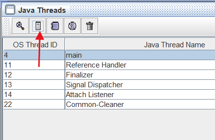
查看方法区¶
Tools-Class Browser
内存溢出
java.lang.OutOfMemory: Metaspace 方法区
java.lang.OutOfMemory: Java heap space 堆
java.lang.OutOfMemory: Direct buffer memory 直接内存
java.lang.StackOverflowError: StackOverflow 栈
垃圾回收为啥是15次¶
对象经历一次垃圾回收，如果没有被回收，age会+1，达到老年代，而底层记录年龄的字段是4位二进制(1111=15)
类的生命周期¶
加载-验证-准备-解析-初始化-使用-卸载
连接阶段：验证-准备-解析
类加载：加载-连接-初始化
对象的生命周期¶
创建-应用-不可见-不可达-收集-终结-对象空间重新分配
创建阶段¶
- 分配对象空间
- 构造对象
- 父类成员按顺序初始化，递归调用父类构造
- 子类成员按顺序初始化 子类构造调用
创建方式：new、反射、clone、序列化
应用阶段¶
对象至少被一个强引用持有
不可见阶段¶
对象在代码区域外即{}外称为不可见
不可达阶段¶
对象引用根集合中找不到直接或间接的强引用
收集阶段¶
垃圾回收器发现对象处于不可达阶段且垃圾回收器对该对象的内存空间重写分配做好准备时，进入收集阶段
终结阶段¶
当对象执行finalize方法后任处于不可达状态，此阶段是等待垃圾回收器回收对象
对象空间重新分配¶
垃圾回收器对该对象的内存空间进行回收或重新分配，对象彻底消失
JVM创建对象过程¶
类加载-检查加载-分配空间-内存空间初始化-设置-对象初始化
分配空间¶
划分内存方式：指针碰撞和空闲列表(取决于堆空间是否规整，即不碎片化)，前者效率高后者需要查表
并发问题解决方式：TLABs和CAS
默认采用在新生代的Eden中开辟空间方式(TLABs)来解决多线程申请内存，禁用(-XX:-UseTLAB)后采用CAS方式
CAS¶
CPU指令，无锁化，乐观机制，具有原子性，即保证了线程安全
内存空间初始化¶
"零"值，如int默认为0，boolean默认为false
设置¶
对象头
组成：类型指针、mark word(哈希码、GC分代年龄、锁状态标识、线程持有的锁、偏向线程ID、偏向时间戳)、记录数组长度的数据(如果是对象数组)
对象¶
由对象头、实例数据、对齐填充(非必须)组成
对象初始化¶
构造方法执行
对象的访问定位¶
句柄方式访问对象、直接指针方式访问对象(快，主流虚拟机采用方案)
判断对象存活¶
引用计数算法：在对象头标记被引用次数，无法解决循环引用(python通过另启线程解决)
根可达性分析：GC roots(RootSet)，目前JVM实现方式，从GC roots作为起点向下搜索路径成为引用链，存在即可达
常见GC roots：静态变量、线程栈变量(局部变量表中的对象)、常量池、JNI指针
额外：内部引用(class对象、异常对象、类加载器)、同步锁(synchronized对象)、内部对象(JVXBean)、临时对象(跨代引用)
class对象回收条件(卸载)¶
- new出的所有对象被回收，即Java堆中不存在该类及其任何派生子类的实例
- 对应的类加载器被回收
- 该类对应的 java.lang.Class 对象没有在任何地方被引用，无法在任何地方通过反射访问该类的方法
- 参数控制：-Xnoclassgc参数禁用类的垃圾收集，如果禁用满足以上3点也无法回收
可达即不可回收
Fruit fruit1 = new Fruit();
垃圾回收打印：-Xlog:gc(-XX:+PrintGC过时，jdk8以下使用)
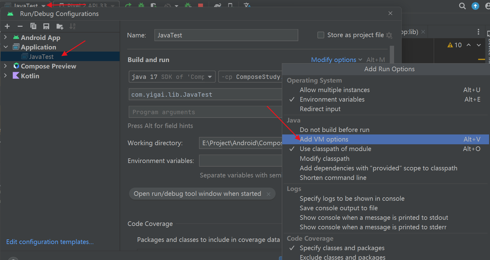
演示案例
public class JavaTest {
public JavaTest instance;
private byte[] bytes = new byte[10 * 1024 * 1024];
public static void main(String[] args) {
JavaTest test1 = new JavaTest();
JavaTest test2 = new JavaTest();
test1.instance = test2;// 引用循环
test2.instance = test1;
test1 = null;//为了能立马触发gc
test2 = null;
System.gc();
}
}
日志：
[0.006s][info][gc] Using G1
[0.067s][info][gc] GC(0) Pause Full (System.gc()) 25M->0M(16M) 2.411ms
finalize¶
用来在对象被回收之前做清理工作，但执行级别较低(需要调用Thread.sleep休眠)，只执行一次，不推荐使用
FinalizeGC，其实是多线程进行，JVM内部使用会new Finalizer对象，完全可以使用try finally代替
各种引用¶
public class JavaTest {
public String name;
public JavaTest(String name) {
this.name = name;
}
@Override
public String toString() {
return "JavaTest{" +
"name='" + name + '\'' +
'}';
}
}
强引用¶
= (身边重要的人，亲人)
软引用SoftReference¶
(老婆，可离婚)：系统内存不足时如即将发生OOM时会被回收
先配置堆内存和最大内存为20m：-Xms20m -Xmx20m
public static void main(String[] args) {
JavaTest test1 = new JavaTest("name");
SoftReference<JavaTest> sr = new SoftReference<>(test1);
test1 = null; //强引用先回收
System.out.println(sr.get()); // JavaTest{name='name'}
System.gc();
System.out.println("gc");
LinkedList<byte[]> list = new LinkedList<>();
for (int i = 0; i < 20; i++) {
try {
list.add(new byte[1 * 1024 * 1024]);
} catch (Throwable e) {
System.out.println("error:" + sr.get()); // null
}
}
}
弱引用WeakReference¶
(女朋友，想分就分)：只要gc就会被回收
public static void main(String[] args) {
JavaTest test1 = new JavaTest("name");
WeakReference<JavaTest> sr = new WeakReference<>(test1);
test1 = null;
System.out.println(sr.get());
System.gc();
System.out.println("gc");
System.out.println(sr.get()); // null
}
虚引用PhantomReference¶
(技师，一不小心就找不到了)：直接内存中有Cleaner类继承虚引用，主要用来跟踪对象垃圾回收的活动
对象分配策略¶
几乎所有对象都是在堆中分配，并不是100%
虚拟机优化技术¶
逃逸分析+触发JIT(热点数据)，本地线程分配缓存
HotSpot(java虚拟机实现)
方法循环万次触发JIT(热点数据)，jvm会进行逃逸分析(栈上分配)
逃逸分析默认开启只支持HotSpot实现的虚拟机，关闭-XX:+DoEscapeAnalysis，禁用后分配到堆空间会触发gc
分配原则¶
- 对象优先在Eden分配
- 空间分配担保：内部会统计老年代平均分配的对象空间大小，如10M，此时如果新生代晋级的对象是8M，即无需触发晋级回收
- 大对象进入老年代(Tenured)：serial、parnew两款垃圾回收期生效
- 长期存活的对象进入老年代(15次，可通过-XX:MaxTenuringThreshold=10修改)
- 动态对象年龄判定
from->to age+1反之也+1
垃圾回收基础知识¶
GC：垃圾回收
堆空间：新生代(Eden、from、to 8：1：1)和老年代
垃圾回收器
回收新生代：Minor GC/Young GC 回收老年代：Major GC/Old GC，一般都会触发Full GC
复制算法(Copying)¶
找到可达引用链，将内存分为两份，将可达对象复制到另一边
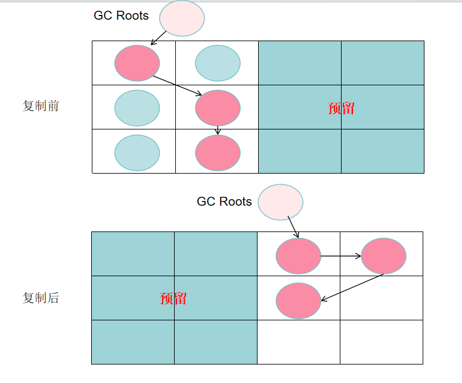
特点
- 实现简单、运行高效
- 没有内存碎片
- 空间利用率只有一半
Appel式复制回收算法¶
Eden区的来源，提高空间利用率和空间分配担保，只适用于新生代
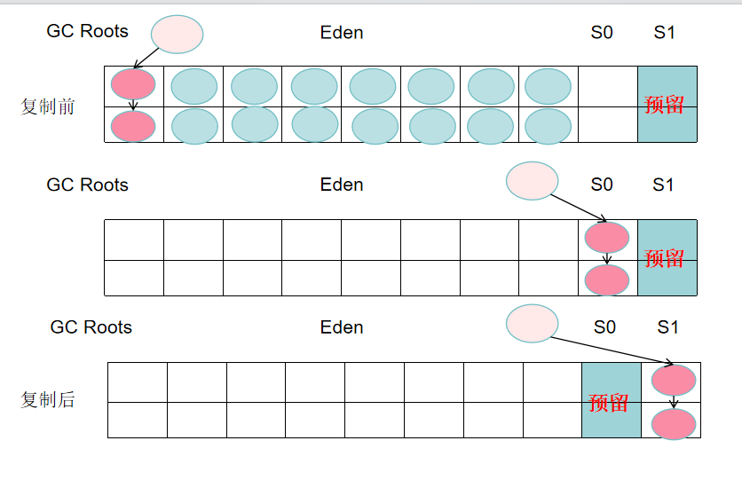
S1是from，S0是to
标记清除算法(Mark-Sweep)¶
找到可达链然后清除垃圾
特点
- 位置不连续，产生碎片
- 可以不暂停(优势，因为没有对象移动)
- 两次扫描，第一次扫描标记出哪些可以回收进行标记，第二次进行清除
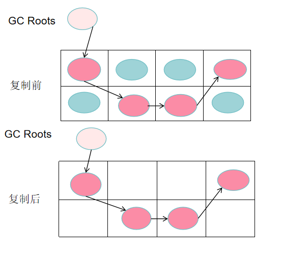
标记整理算法(Mark-Compact)¶
标记->整理->清除
特点
- 没有内存碎片
- 指针需要移动
- 两次扫描
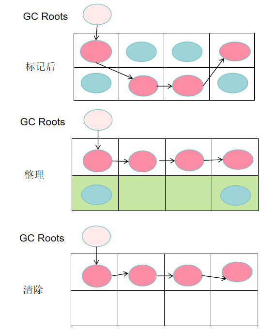
常见垃圾回收器¶
单线程：Serial、Serial Old
多线程：Parallel Scavenga、Parallel Old、ParNew、CMS、G1
PS组合：Parallel Scavenga、Parallel Old会自动扩容，伴随GC，不需要指定Eden、from、to的比例是动态的，吞吐量最高
| 回收器 | 回收对象和算法 | 回收器类型 |
|---|---|---|
| Serial | 新生代、复制算法 | 单线程 |
| Serial Old | 老年代、标记整理算法 | 单线程 |
| Parallel Scavenga | 新生代、复制算法 | 多线程 |
| Parallel Old | 老年代、标记整理算法 | 多线程 |
| ParNew | 新生代、复制算法 | 单线程 |
| CMS | 老年代、标记清除算法 | 多线程 |
| G1 | 跨新生代和老年代、标记整理+化整为零 | 多线程 |
响应优先的原因
比如游戏服务器，GC会导致业务线程暂停触发stop the world
CMS¶
Concurrent Mark Sweep，只针对老年代，java14后被移除
ParNew为CMS定制，用来回收新生代
初始标记、并发标记、重新标记、并发清理、重置线程
初始标记：暂停所有用户线程(时间短)
并发标记：时间长，用户和GC同时运行
重新标记：时间短，暂停所有用户线程
并发清理：时间长，用户和GC同时运行，会产生浮动垃圾，需要下一次才会回收，因此需要预留一部分空间
问题：CPU敏感、浮动垃圾、内存碎片(分配大对象时可能会让jvm会切换成Serial Old，称退化，堆越大耗时越长)
服务器维护：重启后CMS就没有内存碎片
VM参数：-Xlog:gc*(--XX:+PrintGCDetails) --XX:UseConcMarkSweepGC
G1：堆空间8G以上推荐，<6G用CMS，jdk1.8以上默认采用G1
JVM调优¶
扩容新生代¶
为何能提高GC效率吗？
新生代采用复制算法，即先进行扫描(可达性分析算法判断对象是否存活，耗时较少假设为T1)，然后进行对象复制从Eden到From到To(耗时较大假设为T2)
假设新生代容量R，对象A存活时间750ms，MinorGC间隔500ms 扩容后为2R，A的存活时间不会变，MinorGC间隔变成1000ms(由于空间扩大一倍)，则扩容前总耗时为T1+T2，扩容后为2T1，因为扩容后对象已经没存活，所以一般是能提高GC效率，除非都是老年代对象
避免跨代扫面¶
老年代引用了新生代，导致出现整堆扫描，内部优化方案卡表
卡表(card table)：当出现跨代引用时，会在卡表上进行标记，这样扫描只需要扫新生代和被标记的数据
常量池(方法区) Class常量池、字符串常量池、运行时常量池
new String("a") == new String("a");// false
new String("a").intern() == new String("a").intern();// true从常量池获取
总结图¶
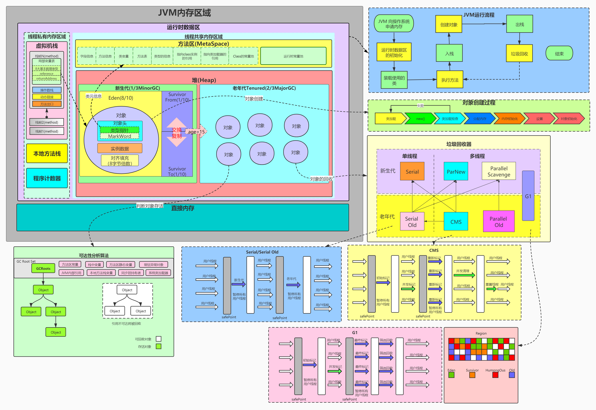